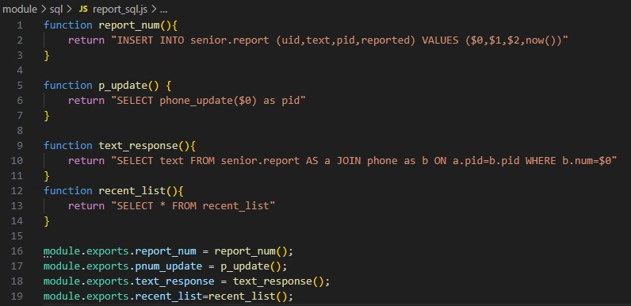

2022.03 ~ 2022.09
2022.03 ~ 2022.09
상세 내용
1
POSTMAN 과 JWT(Json Web Token)을 사용하여 토큰 인증 방식의 로그인을 구현하였습니다. JWT의 단점 중 하나인 토큰탈취를 방지하기 위해 Access Token의 만료시간을 단축시켰으며 짧아진 만료시간은 Refresh Token을 사용하여 보완하였습니다.

2
SQL 프로시저를 사용하여 사용자가 계정 생성이나 수정 시 계정정보(핸드폰 번호)를 조회해, 중복 시 제거 후 업데이트하는 기능을 구현하였습니다.

3
REST API 와 MySQL 트리거를 사용한 스미싱 신고 및 블랙리스트 기능을 구현하였습니다. 사용자가 스미싱 의심 SMS 신고 시 MySQL 트리거를 통해 신고 누적 수를 확인 후 1일 이내 10건 이상 누적 시 블랙리스트 등록되는 기능입니다. 뷰를 이용하여 블랙리스트에 등록된 스미싱 의심자의 PID, 전화번호, 신고사유를 조회할 수 있도록 구현하였습니다.
